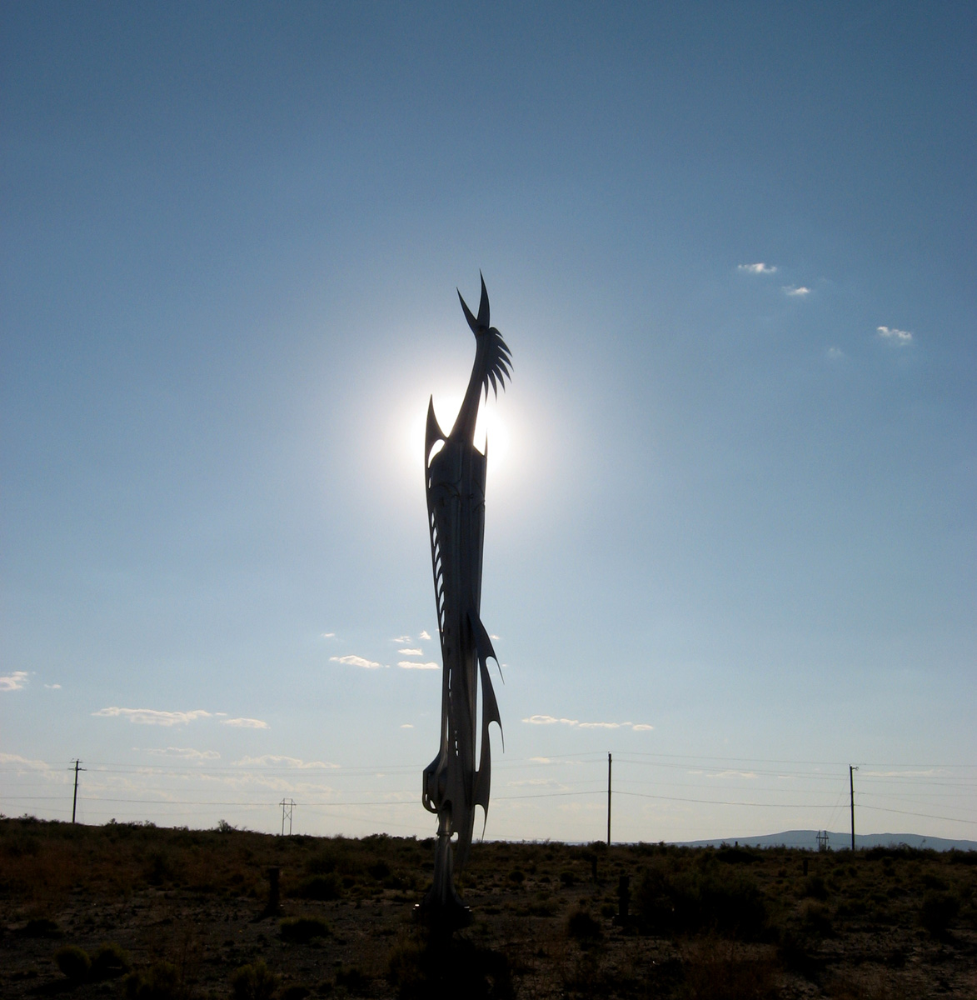

Colorado Springs
Starr Kempf's Kinetic Sculptures
Sunrise Serenade, photographed in 2007 by Carptrash, CC BY-SA 3.0, via Wikimedia Commons. The sculpture is one of three now on loan at the Ent Center for the Arts.

Starr Kempf's kinetic sculptures are steel and aluminum towers built to move in the wind. In Colorado Springs they still stand in two kinds of places: a private lawn in the Cheyenne Cañon neighborhood, which you may see only from the public street, and public grounds where you can walk up to the metal. The house is 2057 Pine Grove Avenue. The closest public set is Sunrise Serenade, Metronome, and Space Needle at the Ent Center for the Arts, on loan through 2034.
View from the street only2057 Pine Grove AvenuePrivate residence, Colorado Springs, CO 80906. Do not enter the yard.Ent Center and Creekwalk Back to Colorado
- The house
- 2057 Pine Grove Avenue, Colorado Springs, CO 80906. Four large sculptures remain on the lawn. Pin 38.78913, -104.86357. Sidewalk and street only.
- Ent Center
- Sunrise Serenade, Metronome, and Space Needle, outdoors at 5225 N Nevada Ave, Colorado Springs, CO 80918, through 2034.
- Also public
- Three works at Creekwalk, 100 East Cheyenne Road at South Nevada Avenue. A pendulum piece was installed at Plaza of the Rockies downtown.
- Manners
- Do not enter the Pine Grove yard, driveway, or house. Do not block a neighbor's driveway. Keep voices low. A breeze is what makes the steel move.
The private lawn
The original site is the house Starr Kempf designed and built after he bought the property in Cheyenne Cañon in 1948. The studio was there too. From 1977 he made the wind sculptures in that yard, each one taking up to three years, and he designed them for the places he set them. He never sold the monumentals. At his death in 1995, about ten or twelve of the large works stood outside the house, on the edge of North Cheyenne Cañon Park.
Four of those large sculptures remain on the lawn. The address published for the site is 2057 Pine Grove Avenue, Colorado Springs, Colorado 80906. It is a residence. The visit is a look from the public street and the sidewalk. Do not step onto the grass, do not use the driveway as a turnaround, and do not approach the door. Neighbors live on this block. Park in a legal space and leave driveways clear. If the curb is full, go to the Ent Center instead of circling the block.
Wind is the show. The pieces are balanced so a gentle breeze turns wings, blades, and vanes. On a still day they rest like towers. When air comes down the canyon they move, which is the reason to wait a few minutes rather than to take one snapshot and leave. Late sun catches the metal the way the 2007 photograph of Sunrise Serenade does, with the light behind the steel. Stay on the pavement while you watch.
Where you can walk up to them
Ent Center through 2034
Three of the monumentals left the yard for a public loan. Sunrise Serenade, Metronome, and Space Needle stand on the grounds of the Ent Center for the Arts at 5225 North Nevada Avenue, Colorado Springs, Colorado 80918, on the University of Colorado Colorado Springs campus. The Galleries of Contemporary Art arranged the loan with Kempf's grandson Joshua Kempf on behalf of the artist's estate. The loan runs through 2034.
Construction cranes set the three works in place on December 18 and 19, 2017, for the Art Without Limits program. They are outdoors. The Marie Walsh Sharpe Gallery and the GOCA Project Space, in the same building, are open Thursday through Saturday from 1 to 6 p.m. That clock is the galleries' clock. The phone is 719-255-3504. Use the center's visitor parking and walk the grounds. This is the place to see a Kempf up close without standing in front of someone's house.
Three more of the monumental kinetic sculptures stand at Creekwalk, a public park in the Ivywild district. The published corner is 100 East Cheyenne Road and South Nevada Avenue. They line the trails there, so a walk is the way to see them, not a stop in a private drive. Downtown, a pendulum sculpture was installed at Plaza of the Rockies. Between the house, the Ent Center, Creekwalk, and that downtown piece, Colorado Springs still holds the set he refused to sell.
If you only have an hour, choose the Ent Center. The three named works are the ones a gallery is prepared to host, and the grounds are meant for visitors. Save Pine Grove for a quiet pass from the street, on a breezy day, with no plan to linger in front of the door.
How a Kempf sculpture moves
Kinetic sculpture is built to move. Kempf's version uses the wind rather than a motor as the usual engine. He balanced steel and aluminum so a light push of air could turn a part without toppling the tower. The forms are birds and weather vanes, and also wings, feathers, and shapes he treated like celestial hardware. A gallery note describes the wind pieces as typically thirty to fifty feet tall. The monumentals often stood more than fifty feet. Either way they read as architecture: you look up, then you wait for the joint to swing.
The making was slow. He started each monumental in the late 1970s and after, and a single work could take three years. Before the towers, he had taught himself bronze. In the 1950s he built a metal foundry in the home studio. From 1955 he sold bronze sculptures to collectors around the country. The wind towers were a different promise. He kept them. A few were wired so spotlights came on to show the metal, and one triggered music as it rotated. The ordinary piece needs no switch. The canyon breeze is enough.
That engineering sits on a shop education. Starr Gideon Kempf was born August 13, 1917, in Bluffton, Ohio, and grew up on a farm near a Swiss Mennonite community. His father and seven uncles were carpenters and blacksmiths, and he learned craft and structure from them. A scholarship took him to the Cleveland Institute of Art, where his paintings and drawings earned high marks. He served in the United States Air Force in World War II, and the towers carry that same care for balance and fit. He was a sculptor and an architect. The house in Cheyenne Cañon is his building as well as his gallery.
He died in Colorado Springs on April 7, 1995, at 77. The sculptures were made for the sites he chose, and he hoped the city or the university would one day keep the house as a museum. No contract was signed before he died. What the city has instead is the public loan, the park trail, and the downtown pendulum, plus the four that remain where he planted them. Seeing them well means matching the visit to the site: sidewalk on Pine Grove, a real walk at Creekwalk, and the campus grounds on Nevada Avenue.
A Colorado Springs day
North Cheyenne Cañon Park is the landscape behind the house, and a walk there belongs after the sidewalk look, not instead of the rule about the yard. Downtown and the west side have other public figures if you want a day of outdoor art that does not depend on a private lawn. Hank the Cowboy stands at East Pikes Peak Avenue and Tejon Street. The General William Palmer statue is at Nevada and Platte. Octo-Maid and the Truffles bronze pig are other Colorado Springs sculptures with their own streets. Those stops are plazas. Kempf's kinetic sculptures are the wind towers, and the street is the rule when the address is Pine Grove.
Last verified .
Questions
Where can I see Starr Kempf's kinetic sculptures?
Four large works remain on the lawn at 2057 Pine Grove Avenue, Colorado Springs, CO 80906, in the Cheyenne Cañon neighborhood. View them from the public street and sidewalk. Sunrise Serenade, Metronome, and Space Needle stand outdoors at the Ent Center for the Arts, 5225 N Nevada Ave, on loan through 2034. Three more are at Creekwalk, 100 East Cheyenne Road at South Nevada Avenue, and a pendulum piece was installed at Plaza of the Rockies downtown.
Can I walk into the yard on Pine Grove?
No. The Pine Grove sculptures are on a private residence. Stay on the public street and sidewalk. Do not enter the yard, the driveway, or the house. Park legally, do not block driveways, and keep the visit quiet for the neighbors.
Which sculptures are at the Ent Center, and for how long?
Sunrise Serenade, Metronome, and Space Needle. Cranes set them on the grounds on December 18 and 19, 2017. The loan from the artist's estate runs through 2034. The galleries beside them are open Thursday through Saturday, 1 to 6 p.m. The phone is 719-255-3504.
Who was Starr Kempf?
Starr Gideon Kempf was born August 13, 1917, in Bluffton, Ohio, and died April 7, 1995, in Colorado Springs. He studied at the Cleveland Institute of Art, served in the United States Air Force in World War II, and built a house and studio in Cheyenne Cañon. From 1977 he made steel wind sculptures, birds and weather vanes, and he did not sell those monumentals.
Sources
- Galleries of Contemporary Art. Sunrise Serenade, Metronome, and Space Needle, the loan through 2034, and the artist note.
- UCCS Communique, 22 December 2017. Cranes installed three works on December 18 and 19, 2017.
- Starr Kempf. Life dates, the Cheyenne Cañon house, the monumentals, and where works stand.
- SPACES Archives. 2057 Pine Grove Avenue, Colorado Springs, CO 80906.
- Colorado Springs Lifestyle. The lawn, Creekwalk, and the Ent Center.
- Sunrise Serenade, Wikimedia Commons. Photograph by Carptrash, 2007, CC BY-SA 3.0.
Link to https://testedprofit.com/CO/Landmarks/Starr%20Kempf's%20Kinetic%20Sculptures/.